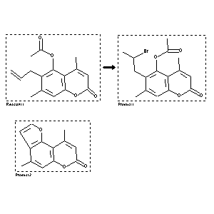

|  |
| FA | RX(1); FLST(1); RX(1) |
Reaction (1 of 1)
| Reaction ID | 3582114 |
| Reactant BRN | 6419115 |
| Reactant | 5-acetoxy-6-allyl-4,7-dimethylcoumarin |
| Product BRN | 6979437; 4445768 |
| Product | acetic acid 6-(2-bromo-propyl)-4,7-dimethyl-2-oxo-2H-chromen-5-yl ester; 4,9-dimethyl-furo[2,3-f]chromen-7-one |
| No. of Reaction Details | 1 |
Reaction Details (1 of 1)
| Reaction Classification | Preparation |
| Yield | 48 percent (BRN=4445768) |
| Reagent | 40percent hydrobromic acid |
| Solvent | acetic acid |
| Time | 1 hour(s) |
| Other Conditions | Heating |
| Citation Pointer | 5914237; Journal; Dall'Acqua, F.; Vedaldi, D.; Caffieri, S.; Rodighiero, P.; FRPSAX; Farmaco Ed.Sci.; EN; 36; 7; 1981; 606-613; |
Reference (1 of 1)
| Citation Number | 5914237 |
| Document Type | Journal |
| Authors | Dall'Acqua, F.; Vedaldi, D.; Caffieri, S.; Rodighiero, P. |
| CODEN | FRPSAX |
| Journal Title | Farmaco Ed.Sci. |
| Language Code | EN |
| (Series) Volume | 36 |
| Number | 7 |
| Publication Year | 1981 |
| Page | 606-613 |